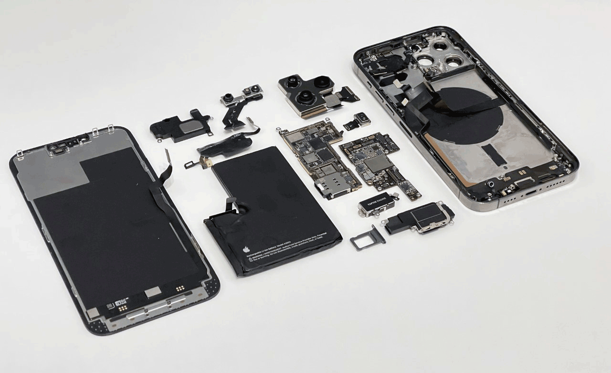

La electrónica es algo presente en nuestro día a día y que nos afecta a todos de manera inconsciente. Pese a formar parte de millones de aparatos, desde electrodomésticos hasta videoconsolas, sigue siendo un mundo desconocido para la mayor parte de la población.
En esta web le hablaremos del mundo de la electrónica, concretamente desde el punto de vista de la compatibilidad electromagnética. Poniendo como ejemplo aparatos electrónicos cotidianos, explicaremos cómo y en base a que se realiza la selección de capacidades. También analizaremos los tipos de capacidades que hay y su respectiva función. Muchas de las personas ignoran su existencia, pero una vez dentro, si te gusta, resulta apasionante.
Existen condensadores de todas las formas y tamaños. Son dispositivos capaces de almacenar energía en forma de campo eléctrico y que se oponen a los cambios bruscos de voltaje liberando su energía almacenada rápidamente. Están formados por dos armaduras metálicas paralelas separadas por un material dieléctrico que evita que la corriente circule directamente entre ellas.
+ INFOSegún la función que cumplan y siempre que estén conectados entre la fuente de tensión y tierra se pueden clasificar en 3 grupos principales: Bypass, Bulk y Decouple.
Estos condensadores se encargan de filtrar el posible ruido producido por la fuente de alimentación y por esto serán los más cercanos a esta.
Estos se colocan después de los condensadores de bypass, proporcionando los armónicos más bajos de los picos de corriente para suministrar un voltaje y corriente estables a los componentes. Su voltaje nominal debería ser el doble que el voltaje máximo esperado en el circuito y su capacidad suele estar entre los 10 y 100 µF.
Son los condensadores más cercanos a los componentes y se encargan de estabilizar el voltaje proporcionando los armónicos más altos de los picos de corriente.
Normalmente el 70% de los condensadores en un dispositivo electrónico suelen ser decouple, el 5% bypass y el 25% bulk. Se recomienda el uso de un condensador bulk por cada dos componentes VLSI.
Aunque realmente no sea un tema de su interés, tener conceptos básicos de electrónica puede ayudarte en el día a día.
Una lavadora rota puede causar pánico a un propietario, incitando visiones de gastos en costosas reparaciones. En cambio, el problema podría ser algo relativamente menor, como un condensador roto. Si eres hábil, es probable que puedas sustituir un condensador tú mismo a muy bajo costo.
Las lavadoras utilizan condensadores de arranque para hacer arrancar el motor, aumentando el par motor por unos momentos. Una vez que el motor está en marcha, se desconecta el condensador, lo que permite a la lavadora iniciar y detenerse según sea necesario a través del ciclo. Sin el aumento de par motor del capacitor de arranque, el motor no va a arrancar y para arreglar la lavadora bastaría con cambiar el condensador.
A día de hoy las pantallas táctiles son una característica imprescindible, pero antes su uso no era tan común debido a que funcionaban de forma resistiva. El uso de estas aumentó cuando Apple implementó pantallas táctiles capacitivas en sus dispositivos móviles. Este tipo de pantallas funcionan debido al principio de las capacidades y gracias a la energía electrostática que almacenamos en nuestra piel. Es el tipo de pantalla que vemos en teléfonos, laptops y tabletas.
Cuando tocas la pantalla, se completa un circuito eléctrico en el punto de contacto, donde cambia la carga eléctrica. Tu dispositivo registra entonces la información como un toque.
Una vez que el toque se registra, los receptores de la pantalla mandan la señal al sistema operativo y con esto provocan una reacción en tu dispositivo. Así es como tú experimentas la interfaz de la aplicación. Las pantallas capacitivas suelen tener una apariencia más brillante y clara. Además, son más sensibles que las pantallas resistivas.
Si el poder de las pantallas táctiles se basa en la capacidad de conducir y recibir energía, ¿cómo funcionan los protectores de pantallas táctiles?
Las pantallas táctiles capacitivas detectan la corriente eléctrica, así que no necesitan experimentar la presión de tu dedo, como lo hacen las pantallas resistivas. Si tu protector de pantalla utiliza un material eléctricamente transparente, no afectará la funcionalidad de la pantalla porque aún podrá registrar el cambio en la carga eléctrica.
Para que nos hagamos una idea de la importancia de las capacidades, el iPhone 6 suma un total de 730 capacitores además de las capacidades parásitas que se generan en otros componentes electrónicos. Lo cual implican un 1% del BOM total y se encuentran presentes desde la placa de circuito impresa (PCB) principal, hasta la PCB de la interfaz, la salida/entrada del botón de inicio, el micrófono frontal, el módulo de visualización, el botón de activación/espera/flash, etc… Todos excepto uno de los capacitores dentro del iPhone son cerámicos de múltiples capas (MLCC). Estas capacidades son las más comunes y se utilizan en más de 1 trillón de dispositivos al año.
Autor: Andrés Sánchez
Autor: Andrés Sánchez
Autor: Andrés Sánchez
Autor: Ibon Izaguirre
Autor: Ibon Izaguirre
Autor: Andrés Sánchez